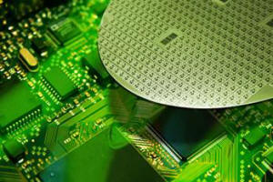
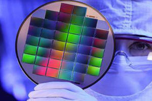

How very pure sand (SiO2) is converted into mono-crystalline silicon
Silicon is the most abundant solid element on earth, being second only to oxygen and it makes up more than 25% of
the earth’s crust. However, it rarely occurs in elemental form, virtually all of it is existing as compounds.
In this lecture the question will be answered how very pure sand (SiO2) is
converted into mono-crystalline silicon and later on into silicon detectors.
After a description of the different growth techniques for mono-crystalline silicon with special interest
in the material used in this work it is shown which kind of detectors have been used and how they have been produced.


The material requirements for the manufacturing of silicon particle detectors used for high energy physics applications have to meet two basic demands: high resistivity and high minority carrier lifetime. A very high resistivity (> l Kohm/cm) is needed in order to fully deplete the detector bulk with a thickness of about 200 - 300 um by an adequate voltage below about 300 V.
Together with the demand for a reasonable price and a homogeneous resistivity distribution, not only over a single wafer but also over the whole ingot, Float Zone silicon is the best choice of material and is therefore exclusively used for detector applications today. Further requirements for detector grade silicon are often a high minority carrier lifetime and a very low bulk generation current in order to avoid detector noise.
However, these requirements should not be taken too strictly for particle detectors that will be exposed to severe radiation levels since already after small radiation fluences the lifetimes are reduced by orders of magnitude and therefore the good initial lifetime qualities are of no use any more.
In the search for radiation harder material and in order to perform radiation tests on an as wide as possible range of material also silicon grown by the Czochralski has been investigated in this lecture.
While for the epitaxial technique the price and the substrate problem might rule out largely its application as detector material the Czochralski method could become of interest for the production of radiation hard material if it is possible to make high resistivity (> 1 KOhm/cm) CZ commercially available.
In this section the production of silicon with the two growth techniques mentioned above will shortly be reviewed with special interest in the high resistivity silicon production and the possibilities of defect engineering respectively the controlled incorporation of impurities into the crystal.